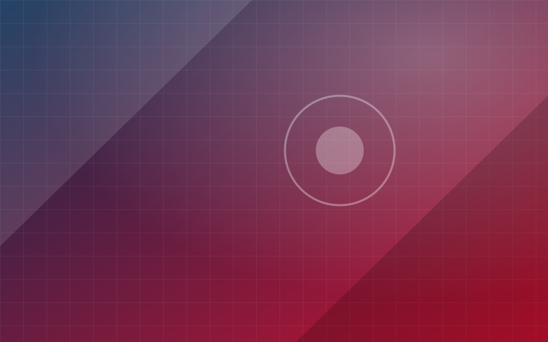

新闻采编
选题策划、现场采访、稿件撰写与编辑校审，产出消息、通讯、评论与人物专访。
从线索发现到作品发布，部门内部按职能分工协作，覆盖宣传工作的完整链条。
选题策划、现场采访、稿件撰写与编辑校审，产出消息、通讯、评论与人物专访。
会议、展览、竞赛、毕业季等活动的图片与视频采集，负责素材归档与初步筛选。
负责公众号等平台的选题排期、图文排版、推送发布与后台数据复盘。
海报、展板、长图与封面设计，建立并维护部门与学院宣传品的视觉一致性。
以下栏目名称与定位均为示例，用于展示结构；正式上线时请替换为部门实际运营的栏目。
聚焦学院教学、科研与设计实践的综合报道栏目，用图文呈现一个阶段内的重要进展与成果。
师生人物专访栏目，记录创作者的想法、方法与成长路径，让作品背后的人被看见。
短视频栏目，用一分钟的镜头语言记录校园日常、活动高光与设计现场。
部门实行"一次采集、多元生成、多端发布"的工作方式： 同一场活动产出的文字、图片与视频，会被改写为适配不同平台的内容形态。
＊以上数据均为示例占位，请替换为部门真实统计口径。
示例条目，用于展示列表版式；正式内容请由部门成员在发布前替换。
围绕学院阶段性重点工作，部门梳理了本学期的报道线索与排期，并就采访分工、素材归档规范进行了讨论。
本期专题以图文与短视频两种形态呈现学生设计实践成果，探索同一素材的多平台内容改写路径。

培训覆盖消息写作结构、采访提问技巧与活动摄影基础，新成员在模拟选题中完成了首次成稿练习。